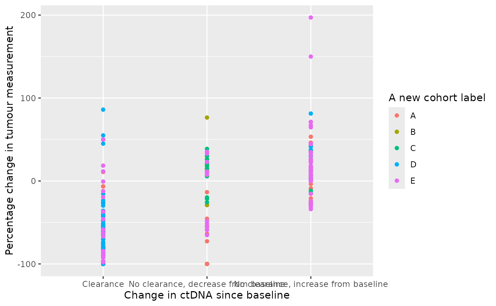
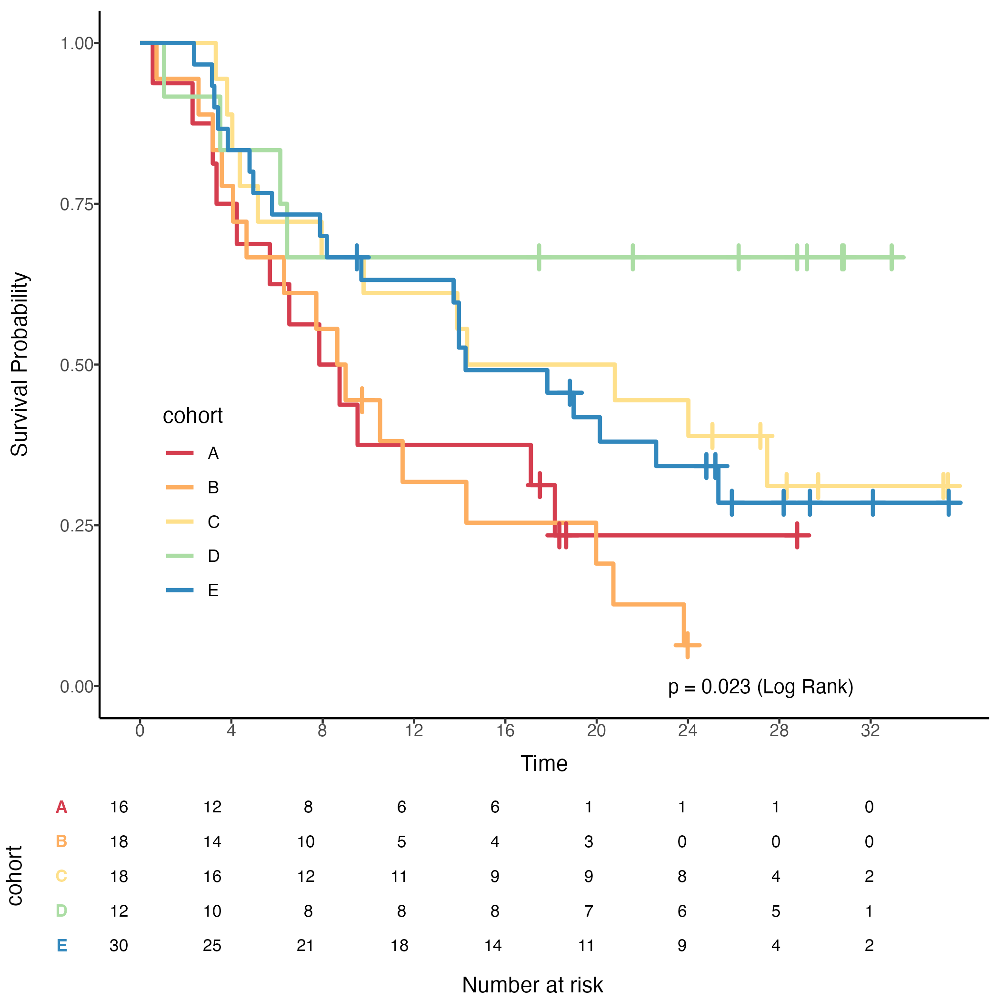
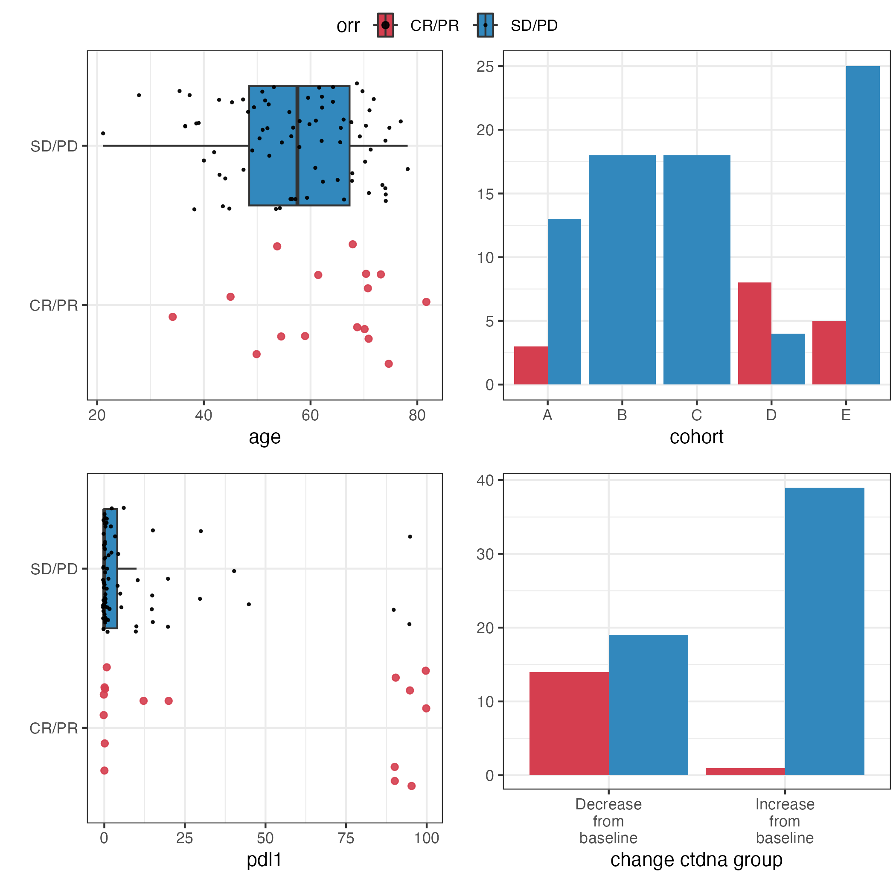
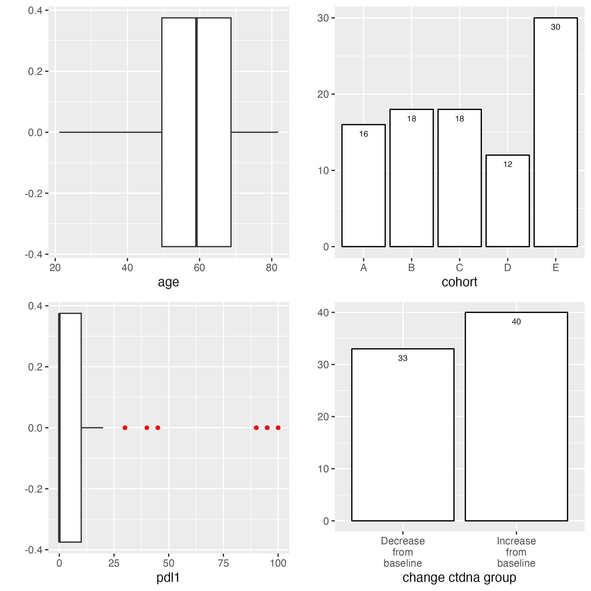
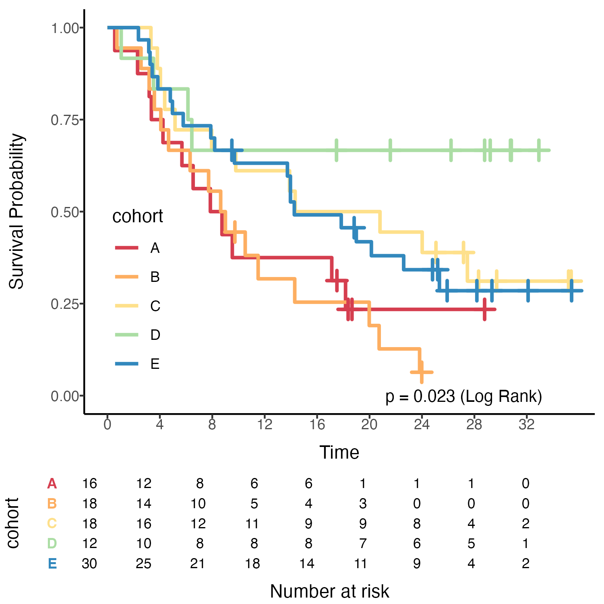
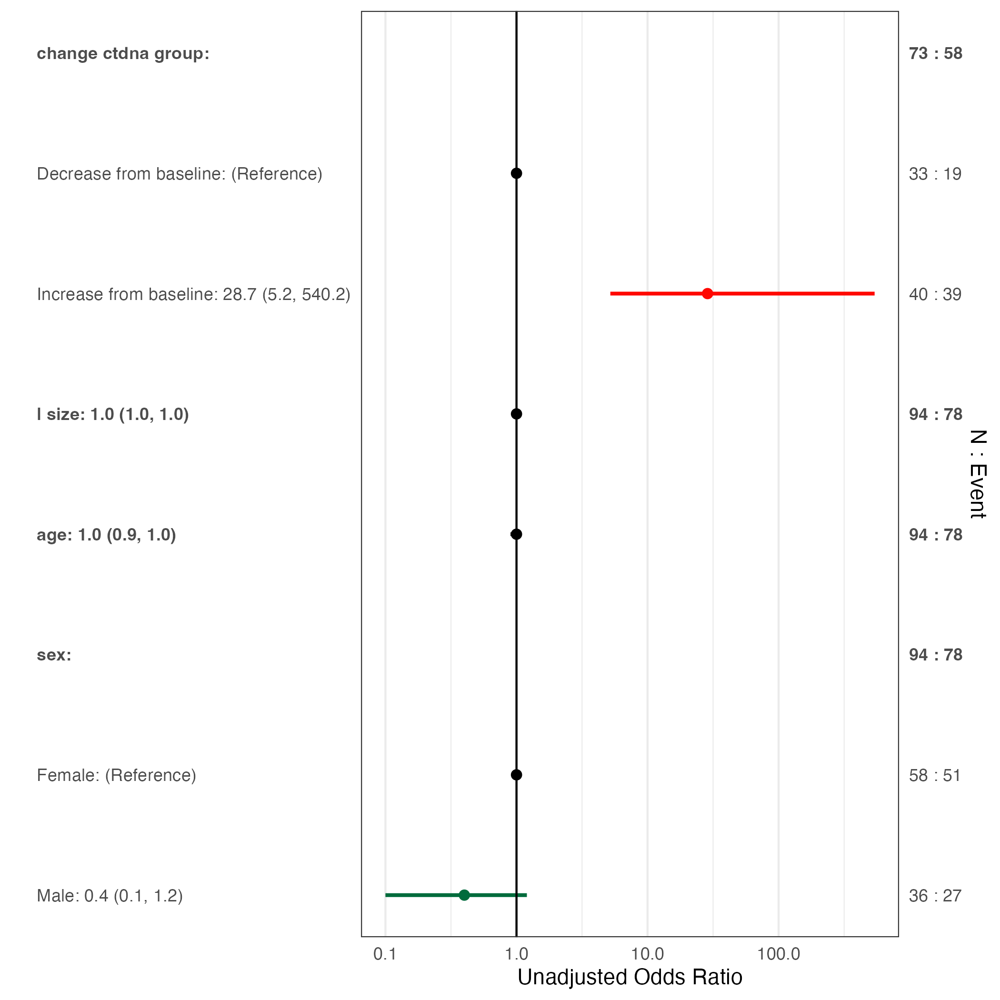
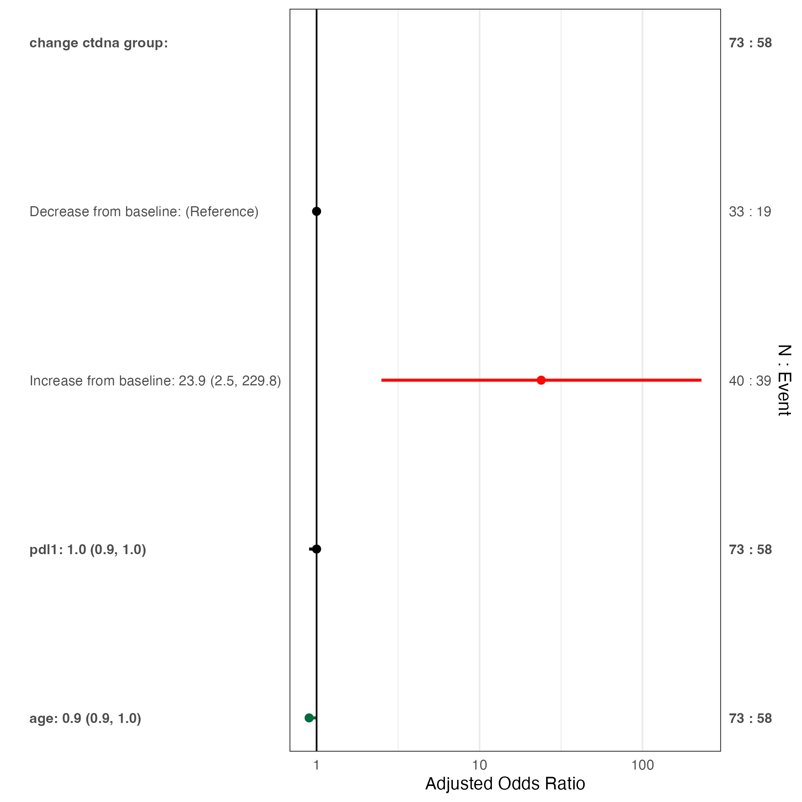
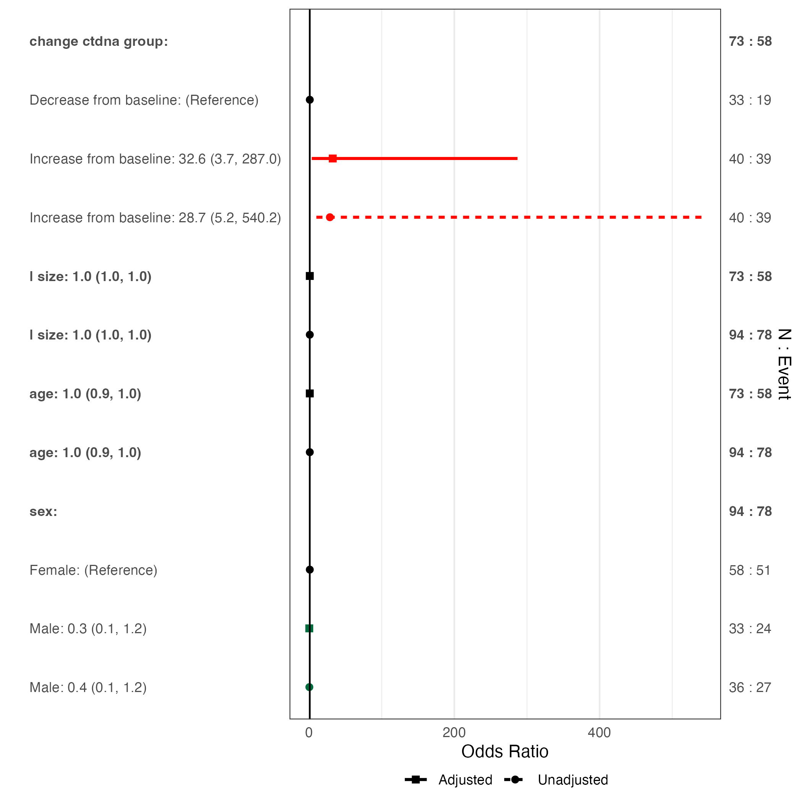
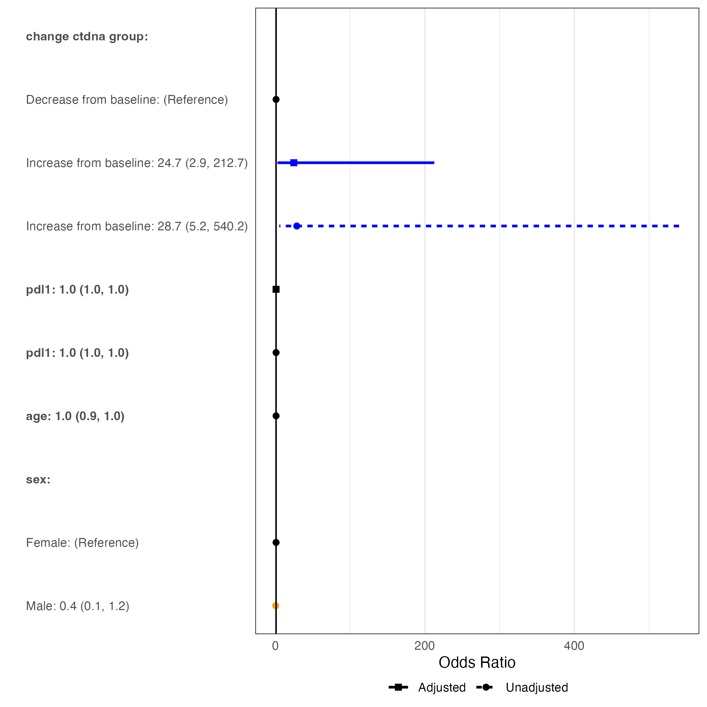

reportRmd Package
reportRmd.RmdOverview
reportRmd is a package designed to facilitate the reporting of common statistical outputs easily in RMarkdown documents. The package supports pdf, html and word output without any changes to the body of the report. The main features are Table 1 style summaries, combining multiple univariate regression models into a single table, tidy multivariable model output and combining univariate and multivariable regressions into a single table. Single table summaries of median survival times and survival probabilities are also provided. A highly customisable survival curve function, based on ggplot2 can be used to create publication-quality plots. Visualisation plots are also available for bivariate relationships and logistic regression models.
A word of caution:
The reportRmd package is designed to facilitate statistical reporting and does not provide any checks regarding the suitability of the models fit.
Summary statistics
Basic summary statistics
| n=94 | |
|---|---|
| Age at study entry | |
| Mean (sd) | 57.9 (12.8) |
| Median (Min,Max) | 59.1 (21.1, 81.8) |
| Patient Sex | |
| Female | 58 (62) |
| Male | 36 (38) |
Set IQR = T for interquartile range instead of
Min/Max
| n=94 | |
|---|---|
| Age at study entry | |
| Mean (sd) | 57.9 (12.8) |
| Median (Q1,Q3) | 59.1 (49.5, 68.7) |
| Patient Sex | |
| Female | 58 (62) |
| Male | 36 (38) |
Or all.stats=T for both
| n=94 | |
|---|---|
| Age at study entry | |
| Mean (sd) | 57.9 (12.8) |
| Median (Q1,Q3) | 59.1 (49.5, 68.7) |
| Range (min, max) | (21.1, 81.8) |
| Patient Sex | |
| Female | 58 (62) |
| Male | 36 (38) |
Summaries By Group
This will produce summary statistics by Sex
| Full Sample (n=94) | Female (n=58) | Male (n=36) | p-value | |
|---|---|---|---|---|
| Age at study entry | 0.30 | |||
| Mean (sd) | 57.9 (12.8) | 56.9 (12.6) | 59.3 (13.1) | |
| Median (Min,Max) | 59.1 (21.1, 81.8) | 56.6 (34.1, 78.2) | 61.2 (21.1, 81.8) | |
| PD L1 percent | 0.76 | |||
| Mean (sd) | 13.9 (29.2) | 15.0 (30.5) | 12.1 (27.3) | |
| Median (Min,Max) | 0 (0, 100) | 0.5 (0.0, 100.0) | 0 (0, 100) | |
| Missing | 1 | 0 | 1 | |
| Did ctDNA increase or decrease from baseline to cycle 3 | 0.84 | |||
| Decrease from baseline | 33 (45) | 19 (48) | 14 (42) | |
| Increase from baseline | 40 (55) | 21 (52) | 19 (58) | |
| Missing | 21 | 18 | 3 |
Showing Statistical Tests
To indicate which statistical test was used use
show.tests=TRUE
rm_covsum(data=pembrolizumab, maincov = 'sex',
covs=c('age','pdl1','change_ctdna_group'),
show.tests=TRUE)| Full Sample (n=94) | Female (n=58) | Male (n=36) | p-value | StatTest | |
|---|---|---|---|---|---|
| Age at study entry | 0.30 | Wilcoxon Rank Sum | |||
| Mean (sd) | 57.9 (12.8) | 56.9 (12.6) | 59.3 (13.1) | ||
| Median (Min,Max) | 59.1 (21.1, 81.8) | 56.6 (34.1, 78.2) | 61.2 (21.1, 81.8) | ||
| PD L1 percent | 0.76 | Wilcoxon Rank Sum | |||
| Mean (sd) | 13.9 (29.2) | 15.0 (30.5) | 12.1 (27.3) | ||
| Median (Min,Max) | 0 (0, 100) | 0.5 (0.0, 100.0) | 0 (0, 100) | ||
| Missing | 1 | 0 | 1 | ||
| Did ctDNA increase or decrease from baseline to cycle 3 | 0.84 | Chi Sq | |||
| Decrease from baseline | 33 (45) | 19 (48) | 14 (42) | ||
| Increase from baseline | 40 (55) | 21 (52) | 19 (58) | ||
| Missing | 21 | 18 | 3 |
Including Effect Sizes
Effect sizes can be added with effSize = TRUE. Effect
size measures include the Wilcoxon r for Wilcoxon rank-sum test, Cohen’s
d for t-test, Omega for ANOVA, Epsilon for Kruskal Wallis test, and
Cramer’s V for categorical variables.
| Full Sample (n=94) | Female (n=58) | Male (n=36) | p-value | Effect Size | |
|---|---|---|---|---|---|
| Age at study entry | 0.30 | 0.11 | |||
| Mean (sd) | 57.9 (12.8) | 56.9 (12.6) | 59.3 (13.1) | ||
| Median (Min,Max) | 59.1 (21.1, 81.8) | 56.6 (34.1, 78.2) | 61.2 (21.1, 81.8) | ||
| Did ctDNA increase or decrease from baseline to cycle 3 | 0.84 | 0.020 | |||
| Decrease from baseline | 33 (45) | 19 (48) | 14 (42) | ||
| Increase from baseline | 40 (55) | 21 (52) | 19 (58) | ||
| Missing | 21 | 18 | 3 |
Parametric vs Non-parametric Comparisons
Group comparisons are non-parametric by default, specify
testcont='ANOVA' for t-tests/ANOVA
rm_covsum(data=pembrolizumab, maincov = 'sex',
covs=c('age','pdl1'),
testcont='ANOVA',
show.tests=TRUE, effSize=TRUE)| Full Sample (n=94) | Female (n=58) | Male (n=36) | p-value | Effect Size | StatTest | |
|---|---|---|---|---|---|---|
| Age at study entry | 0.39 | 0.18 | t-test, Cohen’s d | |||
| Mean (sd) | 57.9 (12.8) | 56.9 (12.6) | 59.3 (13.1) | |||
| Median (Min,Max) | 59.1 (21.1, 81.8) | 56.6 (34.1, 78.2) | 61.2 (21.1, 81.8) | |||
| PD L1 percent | 0.63 | 0.100 | t-test, Cohen’s d | |||
| Mean (sd) | 13.9 (29.2) | 15.0 (30.5) | 12.1 (27.3) | |||
| Median (Min,Max) | 0 (0, 100) | 0.5 (0.0, 100.0) | 0 (0, 100) | |||
| Missing | 1 | 0 | 1 |
Row vs Column Summaries
The default is to indicate percentages by columns (ie. percentages within columns add to 100)
| Full Sample (n=94) | Female (n=58) | Male (n=36) | |
|---|---|---|---|
| Study Cohort | |||
| A | 16 (17) | 3 (5) | 13 (36) |
| B | 18 (19) | 18 (31) | 0 (0) |
| C | 18 (19) | 18 (31) | 0 (0) |
| D | 12 (13) | 7 (12) | 5 (14) |
| E | 30 (32) | 12 (21) | 18 (50) |
But you can also specify to show by row instead
| Full Sample (n=94) | Female (n=58) | Male (n=36) | |
|---|---|---|---|
| Study Cohort | |||
| A | 16 | 3 (19) | 13 (81) |
| B | 18 | 18 (100) | 0 (0) |
| C | 18 | 18 (100) | 0 (0) |
| D | 12 | 7 (58) | 5 (42) |
| E | 30 | 12 (40) | 18 (60) |
Compact summary statistics
Basic summary statistics
rm_compactsum(data = pembrolizumab, xvars = c("change_ctdna_group", "l_size"))| Full Sample (n=94) | Missing | |
|---|---|---|
| Did ctDNA increase or decrease from baseline to cycle 3 - Increase from baseline | 40 (55%) | 21 |
| Target lesion size at baseline | 73.5 (49.2-108.8) | 0 |
Set iqr = T for interquartile range instead of
Min/Max
rm_compactsum(data=pembrolizumab, xvars = c("change_ctdna_group", "l_size"), iqr=TRUE)| Full Sample (n=94) | Missing | |
|---|---|---|
| Did ctDNA increase or decrease from baseline to cycle 3 - Increase from baseline | 40 (55%) | 21 |
| Target lesion size at baseline | 73.5 (49.2-108.8) | 0 |
Or all.stats=T for both
rm_compactsum(data=pembrolizumab, xvars = c("change_ctdna_group", "l_size"), all.stats = T)| Full Sample (n=94) | Missing | |
|---|---|---|
| Did ctDNA increase or decrease from baseline to cycle 3 - Increase from baseline | 40 (55%) | 21 |
| Target lesion size at baseline | 0 | |
| Mean (sd) | 87.9 (59.6) | |
| Median (Q1-Q3) | 73.5 (49.2-108.8) | |
| Range (min-max) | (11.0-387.0) |
Summaries By Group
This will produce summary statistics by Sex:
rm_compactsum(data=pembrolizumab, xvars=c('age','pdl1','change_ctdna_group'), grp = 'sex')| Full Sample (n=94) | Female (n=58) | Male (n=36) | p-value | Missing | |
|---|---|---|---|---|---|
| Age at study entry | 59.1 (49.5-68.7) | 56.6 (45.8-67.8) | 61.2 (52.0-69.4) | 0.30 | 0 |
| PD L1 percent | 0.0 (0.0-10.0) | 0.5 (0.0-13.8) | 0.0 (0.0-4.5) | 0.76 | 1 |
| Did ctDNA increase or decrease from baseline to cycle 3 - Increase from baseline | 40 (55%) | 21 (52%) | 19 (58%) | 0.84 | 21 |
Showing Statistical Tests
To indicate which statistical test was used use
show.tests=TRUE
rm_compactsum(data=pembrolizumab, xvars=c('age','pdl1','change_ctdna_group'), grp = 'sex', show.tests=TRUE)| Full Sample (n=94) | Female (n=58) | Male (n=36) | p-value | Missing | pTest | |
|---|---|---|---|---|---|---|
| Age at study entry | 59.1 (49.5-68.7) | 56.6 (45.8-67.8) | 61.2 (52.0-69.4) | 0.30 | 0 | Wilcoxon Rank Sum |
| PD L1 percent | 0.0 (0.0-10.0) | 0.5 (0.0-13.8) | 0.0 (0.0-4.5) | 0.76 | 1 | Wilcoxon Rank Sum |
| Did ctDNA increase or decrease from baseline to cycle 3 - Increase from baseline | 40 (55%) | 21 (52%) | 19 (58%) | 0.84 | 21 | ChiSq |
Including Effect Sizes
Effect sizes can be added with effSize = TRUE. If
show.tests = TRUE as well, the effStat will also be
shown:
rm_compactsum(data=pembrolizumab, xvars=c('age','pdl1','change_ctdna_group'), grp = 'sex', effSize = T, show.tests = T)| Full Sample (n=94) | Female (n=58) | Male (n=36) | p-value | Effect Size (95% CI) | Missing | pTest | effStat | |
|---|---|---|---|---|---|---|---|---|
| Age at study entry | 59.1 (49.5-68.7) | 56.6 (45.8-67.8) | 61.2 (52.0-69.4) | 0.30 | 0.11 (-0.10, 0.21) | 0 | Wilcoxon Rank Sum | Wilcoxon r |
| PD L1 percent | 0.0 (0.0-10.0) | 0.5 (0.0-13.8) | 0.0 (0.0-4.5) | 0.76 | 0.03 (-0.16, 0.06) | 1 | Wilcoxon Rank Sum | Wilcoxon r |
| Did ctDNA increase or decrease from baseline to cycle 3 - Increase from baseline | 40 (55%) | 21 (52%) | 19 (58%) | 0.84 | 0.02 (-0.20, 0.05) | 21 | ChiSq | Cramer’s V |
Using Mean Summary Statistic Instead of Median
The default summary statistic for numerical variables is median. To
specify which numerical variables should have mean displayed instead,
change the use_mean argument. Unspecified xvars will use
the default median
rm_compactsum(data=pembrolizumab, xvars=c('age','pdl1','change_ctdna_group'), grp = 'sex', use_mean = c("pdl1"), effSize = T, show.tests = T)| Full Sample (n=94) | Female (n=58) | Male (n=36) | p-value | Effect Size (95% CI) | Missing | pTest | effStat | |
|---|---|---|---|---|---|---|---|---|
| Age at study entry | 59.1 (49.5-68.7) | 56.6 (45.8-67.8) | 61.2 (52.0-69.4) | 0.30 | 0.11 (-0.09, 0.21) | 0 | Wilcoxon Rank Sum | Wilcoxon r |
| PD L1 percent | 13.9 (29.2) | 15.0 (30.5) | 12.1 (27.3) | 0.63 | 0.10 (-0.39, 0.20) | 1 | t-test | Cohen’s d |
| Did ctDNA increase or decrease from baseline to cycle 3 - Increase from baseline | 40 (55%) | 21 (52%) | 19 (58%) | 0.84 | 0.02 (-0.19, 0.05) | 21 | ChiSq | Cramer’s V |
Custom Digits Argument
The digits and digits.cat arguments can be changed to a custom numerical value. The default digits is 1, the default digits.cat is 0
rm_compactsum(data=pembrolizumab, xvars=c('age','pdl1','change_ctdna_group'), grp = 'sex', use_mean = c("pdl1"), digits = 2, digits.cat = 1, effSize = T, show.tests = T)| Full Sample (n=94) | Female (n=58) | Male (n=36) | p-value | Effect Size (95% CI) | Missing | pTest | effStat | |
|---|---|---|---|---|---|---|---|---|
| Age at study entry | 59.12 (49.54-68.71) | 56.64 (45.80-67.83) | 61.16 (51.99-69.44) | 0.30 | 0.11 (-0.09, 0.21) | 0 | Wilcoxon Rank Sum | Wilcoxon r |
| PD L1 percent | 13.90 (29.24) | 15.02 (30.55) | 12.06 (27.26) | 0.63 | 0.10 (-0.39, 0.20) | 1 | t-test | Cohen’s d |
| Did ctDNA increase or decrease from baseline to cycle 3 - Increase from baseline | 40 (54.8%) | 21 (52.5%) | 19 (57.6%) | 0.84 | 0.02 (-0.19, 0.05) | 21 | ChiSq | Cramer’s V |
To specify custom digit arguments for different numerical variables,
change the digits argument. Unspecified variables will use
the default value.
rm_compactsum(data=pembrolizumab, xvars=c('age','pdl1','l_size'), grp = 'sex', digits = c("age" = 3, "l_size" = 2), effSize = T, show.tests = T)| Full Sample (n=94) | Female (n=58) | Male (n=36) | p-value | Effect Size (95% CI) | Missing | pTest | effStat | |
|---|---|---|---|---|---|---|---|---|
| Age at study entry | 59.121 (49.542-68.708) | 56.643 (45.800-67.834) | 61.164 (51.992-69.438) | 0.30 | 0.11 (-0.09, 0.21) | 0 | Wilcoxon Rank Sum | Wilcoxon r |
| PD L1 percent | 0.0 (0.0-10.0) | 0.5 (0.0-13.8) | 0.0 (0.0-4.5) | 0.76 | 0.03 (-0.16, 0.05) | 1 | Wilcoxon Rank Sum | Wilcoxon r |
| Target lesion size at baseline | 73.50 (49.25-108.75) | 68.00 (44.25-97.75) | 93.00 (65.50-121.00) | 0.066 | 0.19 (-0.02, 0.37) | 0 | Wilcoxon Rank Sum | Wilcoxon r |
Row vs Column Summaries
The default is to indicate percentages by columns (ie. percentages within columns add to 100). But you can also specify to show by row instead
rm_compactsum(data=pembrolizumab, xvars=c('change_ctdna_group','orr'), grp = 'cohort', effSize = T, show.tests = T, percentage = "row")| Full Sample (n=94) | A (n=16) | B (n=18) | C (n=18) | D (n=12) | E (n=30) | p-value | Effect Size (95% CI) | pTest | effStat | Missing | |
|---|---|---|---|---|---|---|---|---|---|---|---|
| Did ctDNA increase or decrease from baseline to cycle 3 - Increase from baseline | 40 | 8 (20%) | 7 (18%) | 5 (12%) | 2 (5%) | 18 (45%) | 0.18 | 0.30 (0.21, 0.51) | Fisher Exact | Cramer’s V | 21 |
| Objective Response - SD/PD | 78 | 13 (17%) | 18 (23%) | 18 (23%) | 4 (5%) | 25 (32%) | <0.001 | 0.55 (0.76, 1.02) | Fisher Exact | Cramer’s V | 0 |
Viewing the Self-Generated Description
To view the self-generated description for the summary table:
summary_tab <- rm_compactsum(data=pembrolizumab, xvars=c('change_ctdna_group','orr', 'age'), grp = 'cohort', effSize = T, show.tests = T)
cat(attr(summary_tab, "description"))Using Tidyselect
Both rm_covsum and rm_compactsum support
tidyselect syntax, allowing you to use bare column names instead of
character strings. This also enables piping with |>:
pembrolizumab |> rm_compactsum(xvars = c(age, pdl1, change_ctdna_group), grp = sex)| Full Sample (n=94) | Female (n=58) | Male (n=36) | p-value | Missing | |
|---|---|---|---|---|---|
| Age at study entry | 59.1 (49.5-68.7) | 56.6 (45.8-67.8) | 61.2 (52.0-69.4) | 0.30 | 0 |
| PD L1 percent | 0.0 (0.0-10.0) | 0.5 (0.0-13.8) | 0.0 (0.0-4.5) | 0.76 | 1 |
| Did ctDNA increase or decrease from baseline to cycle 3 - Increase from baseline | 40 (55%) | 21 (52%) | 19 (58%) | 0.84 | 21 |
The same tidyselect syntax works with rm_covsum:
| Full Sample (n=94) | Female (n=58) | Male (n=36) | p-value | |
|---|---|---|---|---|
| Age at study entry | 0.30 | |||
| Mean (sd) | 57.9 (12.8) | 56.9 (12.6) | 59.3 (13.1) | |
| Median (Min,Max) | 59.1 (21.1, 81.8) | 56.6 (34.1, 78.2) | 61.2 (21.1, 81.8) | |
| PD L1 percent | 0.76 | |||
| Mean (sd) | 13.9 (29.2) | 15.0 (30.5) | 12.1 (27.3) | |
| Median (Min,Max) | 0 (0, 100) | 0.5 (0.0, 100.0) | 0 (0, 100) | |
| Missing | 1 | 0 | 1 | |
| Did ctDNA increase or decrease from baseline to cycle 3 | 0.84 | |||
| Decrease from baseline | 33 (45) | 19 (48) | 14 (42) | |
| Increase from baseline | 40 (55) | 21 (52) | 19 (58) | |
| Missing | 21 | 18 | 3 |
The xvars/grp aliases can also be used with
rm_covsum for a consistent interface:
| Full Sample (n=94) | Female (n=58) | Male (n=36) | p-value | |
|---|---|---|---|---|
| Age at study entry | 0.30 | |||
| Mean (sd) | 57.9 (12.8) | 56.9 (12.6) | 59.3 (13.1) | |
| Median (Min,Max) | 59.1 (21.1, 81.8) | 56.6 (34.1, 78.2) | 61.2 (21.1, 81.8) | |
| PD L1 percent | 0.76 | |||
| Mean (sd) | 13.9 (29.2) | 15.0 (30.5) | 12.1 (27.3) | |
| Median (Min,Max) | 0 (0, 100) | 0.5 (0.0, 100.0) | 0 (0, 100) | |
| Missing | 1 | 0 | 1 | |
| Did ctDNA increase or decrease from baseline to cycle 3 | 0.84 | |||
| Decrease from baseline | 33 (45) | 19 (48) | 14 (42) | |
| Increase from baseline | 40 (55) | 21 (52) | 19 (58) | |
| Missing | 21 | 18 | 3 |
Adding Header Rows
Header rows can be added to any table using the
header_above argument in outTable(). This
works for HTML, PDF and Word output. The argument takes a named vector
where the names are the header labels and the values are the number of
columns each label spans.
tab <- rm_covsum(data = pembrolizumab, maincov = cohort,
covs = c(age, pdl1, sex), full = FALSE,
pvalue = FALSE, tableOnly = TRUE)
outTable(tab, header_above = c(" " = 1, "Cohorts A-C" = 3, "Cohorts D,E" = 2))| Covariate | A (n=16) | B (n=18) | C (n=18) | D (n=12) | E (n=30) |
|---|---|---|---|---|---|
| Age at study entry | |||||
| Mean (sd) | 62.9 (6.1) | 56.3 (14.0) | 57.9 (10.8) | 63.8 (10.0) | 53.7 (15.3) |
| Median (Min,Max) | 62.1 (51.0, 70.9) | 56.6 (35.5, 74.8) | 53.9 (36.5, 74.0) | 64.6 (45.0, 78.2) | 51.8 (21.1, 81.8) |
| PD L1 percent | |||||
| Mean (sd) | 32.8 (42.1) | 7.5 (21.3) | 7.9 (10.2) | 25.8 (40.2) | 7.2 (24.0) |
| Median (Min,Max) | 2 (0, 100) | 0 (0, 90) | 2.5 (0.0, 30.0) | 1 (0, 95) | 0 (0, 95) |
| Missing | 1 | 0 | 0 | 0 | 0 |
| Patient Sex | |||||
| Female | 3 (19) | 18 (100) | 18 (100) | 7 (58) | 12 (40) |
| Male | 13 (81) | 0 (0) | 0 (0) | 5 (42) | 18 (60) |
Univariate regression
Combining multiple univariate regression analyses into a single table. The function will try to determine the most appropriate model from the data.
| OR(95%CI) | p-value | N | Event | |
|---|---|---|---|---|
| Age at study entry | 0.96 (0.91, 1.00) | 0.089 | 94 | 78 |
| PD L1 percent | 0.97 (0.95, 0.98) | <0.001 | 93 | 77 |
| Did ctDNA increase or decrease from baseline to cycle 3 | 73 | 58 | ||
| Decrease from baseline | Reference | 33 | 19 | |
| Increase from baseline | 28.74 (5.20, 540.18) | 0.002 | 40 | 39 |
Simple Linear Regression
If the response is continuous linear regression is the default. Using
type = 'linear' will ensure linear regression.
| Estimate(95%CI) | p-value | N | |
|---|---|---|---|
| Age at study entry | -0.58 (-1.54, 0.38) | 0.23 | 94 |
| Study Cohort | 94 | ||
| A | Reference | 16 | |
| B | -38.04 (-74.95, -1.13) | 0.044 | 18 |
| C | 20.35 (-16.56, 57.26) | 0.28 | 18 |
| D | -24.79 (-65.82, 16.23) | 0.23 | 12 |
| E | 31.69 (-1.56, 64.95) | 0.062 | 30 |
Logistic Regression
If the response is binomial, logistic regression will be run (or
specified with type = 'logistic').
| OR(95%CI) | p-value | N | Event | |
|---|---|---|---|---|
| Age at study entry | 0.96 (0.91, 1.00) | 0.089 | 94 | 78 |
| Study Cohort | 94 | 78 | ||
| A | Reference | 16 | 13 | |
| B | 7.3e+07 (8.5e-76, NA) | 0.99 | 18 | 18 |
| C | 7.3e+07 (7.7e-74, NA) | 0.99 | 18 | 18 |
| D | 0.12 (0.02, 0.60) | 0.015 | 12 | 4 |
| E | 1.15 (0.21, 5.49) | 0.86 | 30 | 25 |
Poisson Regression
If the response is integer, poisson regression will be run (or
specified with type = 'poisson').
pembrolizumab$Counts <- rpois(nrow(pembrolizumab),lambda = 3)
rm_uvsum(data=pembrolizumab, response='Counts',covs=c('age','cohort'))| RR(95%CI) | p-value | N | |
|---|---|---|---|
| Age at study entry | 1.00 (0.99, 1.01) | 0.48 | 94 |
| Study Cohort | 94 | ||
| A | Reference | 16 | |
| B | 0.95 (0.66, 1.37) | 0.79 | 18 |
| C | 0.83 (0.57, 1.20) | 0.32 | 18 |
| D | 0.77 (0.50, 1.18) | 0.24 | 12 |
| E | 0.81 (0.58, 1.14) | 0.23 | 30 |
offset terms can be specified as well, but must correspond to a variable in the data set
pembrolizumab$length_followup <- rnorm(nrow(pembrolizumab),mean = 72,sd=3)
pembrolizumab$log_length_followup <- log(pembrolizumab$length_followup)
rm_uvsum(data=pembrolizumab, response='Counts',covs=c('age','cohort'),
offset = "log_length_followup")| RR(95%CI) | p-value | N | |
|---|---|---|---|
| Age at study entry | 1.00 (0.99, 1.01) | 0.51 | 94 |
| Study Cohort | 94 | ||
| A | Reference | 16 | |
| B | 0.96 (0.67, 1.38) | 0.83 | 18 |
| C | 0.83 (0.57, 1.20) | 0.32 | 18 |
| D | 0.78 (0.50, 1.19) | 0.26 | 12 |
| E | 0.81 (0.58, 1.14) | 0.23 | 30 |
Negative Binomial Regression
To run negative binomial regression instead specify
type = 'negbin'
rm_uvsum(data=pembrolizumab, response='Counts', type='negbin',
covs=c('age','cohort'),
offset = "log_length_followup")| RR(95%CI) | p-value | N | |
|---|---|---|---|
| Age at study entry | 1.00 (0.99, 1.01) | 0.51 | 94 |
| Study Cohort | 94 | ||
| A | Reference | 16 | |
| B | 0.96 (0.67, 1.38) | 0.83 | 18 |
| C | 0.83 (0.57, 1.20) | 0.32 | 18 |
| D | 0.78 (0.50, 1.19) | 0.26 | 12 |
| E | 0.81 (0.58, 1.14) | 0.23 | 30 |
Survival Analysis
If two response variables are specified and then survival analysis is
run (specified with type='coxph').
rm_uvsum(data=pembrolizumab, response=c('os_time','os_status'),
covs=c('age','pdl1','change_ctdna_group'),whichp = "levels")| HR(95%CI) | p-value | N | Event | |
|---|---|---|---|---|
| Age at study entry | 0.99 (0.97, 1.01) | 0.16 | 94 | 64 |
| PD L1 percent | 0.99 (0.98, 1.00) | 0.026 | 93 | 63 |
| Did ctDNA increase or decrease from baseline to cycle 3 | 73 | 46 | ||
| Decrease from baseline | Reference | 33 | 14 | |
| Increase from baseline | 3.06 (1.62, 5.77) | <0.001 | 40 | 32 |
Competing Risk
Competing risk models need to be explicitly specified using
type='crr'.
rm_uvsum(data=pembrolizumab, response=c('os_time','os_status'),
covs=c('age','pdl1','change_ctdna_group'),
type='crr')| HR(95%CI) | p-value | N | Event | |
|---|---|---|---|---|
| Age at study entry | 0.99 (0.97, 1.00) | 0.15 | 94 | 64 |
| PD L1 percent | 0.99 (0.98, 1.00) | 0.017 | 93 | 63 |
| Did ctDNA increase or decrease from baseline to cycle 3 | 73 | 46 | ||
| Decrease from baseline | Reference | 33 | 14 | |
| Increase from baseline | 3.06 (1.64, 5.69) | <0.001 | 40 | 32 |
GEE Models
Correlated observations can be handled using GEE
data("ctDNA")
rm_uvsum(response = 'size_change',
covs=c('time','ctdna_status'),
gee=TRUE,
id='id', corstr="exchangeable",
family=gaussian("identity"),
data=ctDNA,showN=TRUE)| Estimate(95%CI) | p-value | N (obs|clusters) | |
|---|---|---|---|
| Number of weeks on treatment | -0.12 (-0.44, 0.19) | 0.44 | 262|72 |
| Change in ctDNA since baseline | 262|72 | ||
| Clearance | Reference | 134|14 | |
| No clearance, decrease from baseline | 61.29 (37.49, 85.09) | <0.001 | 42|17 |
| No clearance, increase from baseline | 82.52 (64.75, 100.28) | <0.001 | 86|41 |
MICE output
Outputs from multiple imputations can be summarised as follows:
miss_data <- pembrolizumab
miss_data$age[sample(1:nrow(pembrolizumab),50,replace=F)] <- NA
miss_data$cohort[sample(1:nrow(pembrolizumab),50,replace=F)] <- NA
require(mice)
ini <- mice::mice(miss_data, maxit = 0)
pred_matrix <- ini$predictorMatrix
pred_matrix[1, ] <- 0
pred_matrix[, 1] <- 0
imp <- mice::mice(miss_data, m = 5, predictorMatrix = pred_matrix, printFlag = FALSE)
imputed_datasets <- purrr::map(1:5, \(m) mice::complete(imp, m))
fits <- lapply(imputed_datasets, function(dat) {
glm(orr ~ age+cohort, data = dat,family='binomial')
})
model <- mice::as.mira(fits)
rm_mvsum(model) Returning Model Objects
If you want to check the underlying models, set
returnModels = TRUE
## $age
##
## Call: glm(formula = orr ~ age, family = binomial, data = data)
##
## Coefficients:
## (Intercept) age
## 4.12269 -0.04231
##
## Degrees of Freedom: 93 Total (i.e. Null); 92 Residual
## Null Deviance: 85.77
## Residual Deviance: 82.53 AIC: 86.53The data analysed can be examined by interrogating the data object appended to each model
mList <- rm_uvsum(response = 'orr',
covs=c('age'),
data=pembrolizumab,returnModels = TRUE)
head(mList$age$data)## # A tibble: 6 × 18
## id age sex cohort l_size pdl1 tmb baseline_ctdna change_ctdna_group
## <fct> <dbl> <fct> <fct> <dbl> <dbl> <dbl> <dbl> <fct>
## 1 INS-A… 62.1 Male A 140 2 0.574 114. Increase from bas…
## 2 INS-A… 62.2 Male A 108 0 0.921 4.26 Increase from bas…
## 3 INS-A… 70.9 Male A 11 100 0.375 205. Decrease from bas…
## 4 INS-A… 57.9 Male A 39 45 0.824 169. Increase from bas…
## 5 INS-A… 65.7 Fema… A 90 0 0.114 425. Decrease from bas…
## 6 INS-A… 60.9 Male A 124 2 0.717 15.8 Increase from bas…
## # ℹ 9 more variables: orr <fct>, cbr <fct>, os_status <dbl>, os_time <dbl>,
## # pfs_status <dbl>, pfs_time <dbl>, Counts <int>, length_followup <dbl>,
## # log_length_followup <dbl>Adjusting p-values
Multiple comparisons can be controlled for with the p.adjust
argument, which accepts any of the options from the
p.adjust function.
| OR(95%CI) | p-value | N | Event | |
|---|---|---|---|---|
| Age at study entry | 0.96 (0.91, 1.00) | 0.11 | 94 | 78 |
| Patient Sex | 94 | 78 | ||
| Female | Reference | 58 | 51 | |
| Male | 0.41 (0.13, 1.22) | 0.11 | 36 | 27 |
| PD L1 percent | 0.97 (0.95, 0.98) | <0.001 | 93 | 77 |
Note: The raw p-value column is suppressed when there are categorical variables with >2 levels, to prevent three columns of p-values from appearing.
Multivariable analysis
To create a nice display for multivariable models the multivariable model first needs to be fit.
By default, the variance inflation factor will be shown to check for
multicollinearity. To suppress this column set vif=FALSE.
Note: variance inflation factors are not computed (yet) for multilevel
or GEE models.
glm_fit <- glm(orr~change_ctdna_group+pdl1+age,
family='binomial',
data = pembrolizumab)
rm_mvsum(glm_fit, showN = TRUE, vif=TRUE)| OR(95%CI) | p-value | N | Event | VIF | |
|---|---|---|---|---|---|
| Did ctDNA increase or decrease from baseline to cycle 3 | 73 | 58 | 1.03 | ||
| Decrease from baseline | Reference | 33 | 19 | ||
| Increase from baseline | 23.92 (3.69, 508.17) | 0.006 | 40 | 39 | |
| PD L1 percent | 0.97 (0.95, 0.99) | 0.011 | 73 | 58 | 1.24 |
| Age at study entry | 0.94 (0.87, 1.00) | 0.078 | 73 | 58 | 1.23 |
p-values can be adjusted for multiple comparisons using any of the
options available in the p.adjust function. This argument
is also available for univariate models run with rm_uvsum.
rm_mvsum(glm_fit, showN = TRUE, vif=TRUE,p.adjust = 'holm')| OR(95%CI) | p-value | N | Event | VIF | |
|---|---|---|---|---|---|
| Did ctDNA increase or decrease from baseline to cycle 3 | 73 | 58 | 1.03 | ||
| Decrease from baseline | Reference | 33 | 19 | ||
| Increase from baseline | 23.92 (3.69, 508.17) | 0.018 | 40 | 39 | |
| PD L1 percent | 0.97 (0.95, 0.99) | 0.022 | 73 | 58 | 1.24 |
| Age at study entry | 0.94 (0.87, 1.00) | 0.078 | 73 | 58 | 1.23 |
Including Unadjusted Estimates
As of version 0.1.3, you can include univariate (unadjusted)
estimates alongside the multivariable estimates in a single table by
setting include_unadjusted = TRUE. This provides a
convenient way to compare unadjusted and adjusted estimates
side-by-side.
glm_fit <- glm(orr~change_ctdna_group+pdl1+age,
family='binomial',
data = pembrolizumab)
rm_mvsum(glm_fit, data = pembrolizumab, include_unadjusted = TRUE, showN = TRUE, vif = TRUE)| Unadjusted OR(95%CI) | Unadjusted p-value | Adjusted OR(95%CI) | Adjusted p-value | N | Event | VIF | |
|---|---|---|---|---|---|---|---|
| Did ctDNA increase or decrease from baseline to cycle 3 | 73 | 58 | 1.03 | ||||
| Decrease from baseline | Reference | Reference | 33 | 19 | |||
| Increase from baseline | 28.74 (5.20, 540.18) | 0.002 | 23.92 (3.69, 508.17) | 0.006 | 40 | 39 | |
| PD L1 percent | 0.97 (0.95, 0.98) | <0.001 | 0.97 (0.95, 0.99) | 0.011 | 73 | 58 | 1.24 |
| Age at study entry | 0.96 (0.91, 1.00) | 0.089 | 0.94 (0.87, 1.00) | 0.078 | 73 | 58 | 1.23 |
This feature works with all supported model types including Cox proportional hazards models:
require(survival)
cox_fit <- coxph(Surv(os_time, os_status) ~ age + sex + baseline_ctdna,
data = pembrolizumab)
rm_mvsum(cox_fit, data = pembrolizumab, include_unadjusted = TRUE, tableOnly = TRUE)## Covariate Unadjusted HR(95%CI) Unadjusted p-value Adjusted HR(95%CI)
## 1 Age at study entry 0.99 (0.97, 1.01) 0.16 0.98 (0.96, 1.00)
## 2 Patient Sex <NA> <NA> <NA>
## 3 Female Reference <NA> Reference
## 4 Male 1.21 (0.73, 2.00) 0.46 1.19 (0.70, 2.02)
## 5 Baseline ctDNA 1.00 (1.00, 1.00) 0.019 1.00 (1.00, 1.00)
## Adjusted p-value N Event VIF
## 1 0.088 94 64 1.06
## 2 <NA> 94 64 1.11
## 3 <NA> 58 39 NA
## 4 0.52 36 25 NA
## 5 0.021 94 64 1.09Combining univariate and multivariable models
To display both models in a single table run the rm_uvsum and
rm_mvsum functions with tableOnly=TRUE and combine.
uvsumTable <- rm_uvsum(data=pembrolizumab, response='orr',
covs=c('age','sex','pdl1','change_ctdna_group'),tableOnly = TRUE)
glm_fit <- glm(orr~change_ctdna_group+pdl1,
family='binomial',
data = pembrolizumab)
mvsumTable <- rm_mvsum(glm_fit, showN = TRUE,tableOnly = TRUE)
rm_uv_mv(uvsumTable,mvsumTable)| Unadjusted OR(95%CI) | p | Adjusted OR(95%CI) | p (adj) | |
|---|---|---|---|---|
| Age at study entry | 0.96 (0.91, 1.00) | 0.089 | ||
| Patient Sex | ||||
| Female | Reference | |||
| Male | 0.41 (0.13, 1.22) | 0.11 | ||
| PD L1 percent | 0.97 (0.95, 0.98) | <0.001 | 0.98 (0.95, 1.00) | 0.024 |
| Did ctDNA increase or decrease from baseline to cycle 3 | ||||
| Decrease from baseline | Reference | Reference | ||
| Increase from baseline | 28.74 (5.20, 540.18) | 0.002 | 24.71 (4.19, 479.13) | 0.004 |
Note: This can also be done with adjusted p-values, but when combined the raw p-values are dropped.
uvsumTable <- rm_uvsum(data=pembrolizumab, response='orr',
covs=c('age','sex','pdl1','change_ctdna_group'),tableOnly = TRUE,p.adjust='holm')
glm_fit <- glm(orr~change_ctdna_group+pdl1,
family='binomial',
data = pembrolizumab)
mvsumTable <- rm_mvsum(glm_fit,tableOnly = TRUE,p.adjust='holm')
rm_uv_mv(uvsumTable,mvsumTable)| Unadjusted OR(95%CI) | p | Adjusted OR(95%CI) | p (adj) | |
|---|---|---|---|---|
| Age at study entry | 0.96 (0.91, 1.00) | 0.18 | ||
| Patient Sex | ||||
| Female | Reference | |||
| Male | 0.41 (0.13, 1.22) | 0.18 | ||
| PD L1 percent | 0.97 (0.95, 0.98) | <0.001 | 0.98 (0.95, 1.00) | 0.024 |
| Did ctDNA increase or decrease from baseline to cycle 3 | ||||
| Decrease from baseline | Reference | Reference | ||
| Increase from baseline | 28.74 (5.20, 540.18) | 0.005 | 24.71 (4.19, 479.13) | 0.007 |
Changing the output
If you need to make changes to the tables, setting
tableOnly=TRUE will return a data frame for any of the
rm_ functions. Changes can be made, and the table output
using outTable()
mvsumTable <- rm_mvsum(glm_fit, showN = TRUE,tableOnly = TRUE)
names(mvsumTable)[1] <-'Predictor'
outTable(mvsumTable)| Predictor | OR(95%CI) | p-value | N | Event | VIF |
|---|---|---|---|---|---|
| Did ctDNA increase or decrease from baseline to cycle 3 | 73 | 58 | 1.01 | ||
| Decrease from baseline | Reference | 33 | 19 | ||
| Increase from baseline | 24.71 (4.19, 479.13) | 0.004 | 40 | 39 | |
| PD L1 percent | 0.98 (0.95, 1.00) | 0.024 | 73 | 58 | 1.01 |
Combining tables
#Tables can be nested with the nestTable() function
cohortA <- rm_uvsum(data=subset(pembrolizumab,cohort=='A'),
response = 'pdl1',
covs=c('age','sex'),
tableOnly = T)
cohortA$Cohort <- 'Cohort A'
cohortE <- rm_uvsum(data=subset(pembrolizumab,cohort=='E'),
response = 'pdl1',
covs=c('age','sex'),
tableOnly = T)
cohortE$Cohort <- 'Cohort E'
nestTable(rbind(cohortA,cohortE),head_col = 'Cohort',to_col = 'Covariate')| Estimate(95%CI) | p-value | N | |
|---|---|---|---|
| Cohort A | |||
| Age at study entry | 2.94 (-0.70, 6.58) | 0.10 | 15 |
| Patient Sex | 15 | ||
| Female | Reference | 3 | |
| Male | -40.25 (-96.25, 15.75) | 0.14 | 12 |
| Cohort E | |||
| Age at study entry | -0.44 (-1.02, 0.15) | 0.14 | 30 |
| Patient Sex | 30 | ||
| Female | Reference | 12 | |
| Male | -14.86 (-32.57, 2.85) | 0.097 | 18 |
Scrollable Tables
If you are rendering to html format you can use the
scrollTable function to create a scrollable table. This is
useful for tables with many rows. If the output format is not html then
a regular table will be displayed.
long_table <- rm_compactsum(data=pembrolizumab,xvars = c(age,sex,cohort,pdl1,tmb,baseline_ctdna,change_ctdna_group,orr,cbr))
scrolling_table(long_table,pixelHeight = 300)| Full Sample (n=94) | Missing | |
|---|---|---|
| Age at study entry | 59.1 (49.5-68.7) | 0 |
| Patient Sex - Male | 36 (38%) | 0 |
| Study Cohort | 0 | |
| A | 16 (17%) | |
| B | 18 (19%) | |
| C | 18 (19%) | |
| D | 12 (13%) | |
| E | 30 (32%) | |
| PD L1 percent | 0.0 (0.0-10.0) | 1 |
| log of TMB | 0.7 (0.4-1.3) | 0 |
| Baseline ctDNA | 86.0 (7.5-416.6) | 0 |
| Did ctDNA increase or decrease from baseline to cycle 3 - Increase from baseline | 40 (55%) | 21 |
| Objective Response - SD/PD | 78 (83%) | 0 |
| Clinical Beneficial Response - PD/SD<C6 | 70 (74%) | 0 |
Simple Survival Summaries
Displaying survival probabilities at different times by sex using Kaplan Meier estimates
rm_survsum(data=pembrolizumab,time='os_time',status='os_status',
group="sex",survtimes=seq(12,36,12),survtimeunit='months')| Group | Events/Total | Median (95%CI) | 12months (95% CI) | 24months (95% CI) | 36months (95% CI) |
|---|---|---|---|---|---|
| Female | 39/58 | 14.29 (9.69, 23.82) | 0.55 (0.44, 0.69) | 0.34 (0.24, 0.50) | 0.29 (0.18, 0.45) |
| Male | 25/36 | 11.24 (6.14, 25.33) | 0.50 (0.36, 0.69) | 0.31 (0.18, 0.52) | 0.27 (0.15, 0.48) |
| Log Rank Test | ChiSq | 0.5 on 1 df | |||
| p-value | 0.46 |
Survival Times in Long Format
Displaying survival probabilities at different times by sex using Cox PH estimates
rm_survtime(data=pembrolizumab,time='os_time',status='os_status',
strata="sex",survtimes=c(12,24),survtimeunit='mo',type='PH')| Time (mo) | At Risk | Events | Censored | Survival Rate (95% CI) |
|---|---|---|---|---|
| Overall | 94 | |||
| 12 | 48 | 44 | 2 | 0.53 (0.44, 0.64) |
| 24 | 24 | 17 | 7 | 0.33 (0.25, 0.45) |
| Female | 58 | |||
| 12 | 31 | 26 | 1 | 0.55 (0.44, 0.70) |
| 24 | 16 | 11 | 4 | 0.35 (0.24, 0.50) |
| Male | 36 | |||
| 12 | 17 | 18 | 1 | 0.51 (0.37, 0.70) |
| 24 | 8 | 6 | 3 | 0.32 (0.19, 0.52) |
Survival Times With Covariate Adjustments
Displaying survival probabilities at different times by sex, adjusting for age using Cox PH estimates
rm_survtime(data=pembrolizumab,time='os_time',status='os_status', covs='age',
strata="sex",survtimes=c(12,24),survtimeunit='mo',type='PH')| Time (mo) | At Risk | Events | Censored | Survival Rate (95% CI) |
|---|---|---|---|---|
| Overall | 94 | |||
| 12 | 48 | 44 | 2 | 0.54 (0.44, 0.65) |
| 24 | 24 | 17 | 7 | 0.33 (0.25, 0.45) |
| Female | 58 | |||
| 12 | 31 | 26 | 1 | 0.56 (0.44, 0.70) |
| 24 | 16 | 11 | 4 | 0.35 (0.24, 0.50) |
| Male | 36 | |||
| 12 | 17 | 18 | 1 | 0.51 (0.37, 0.70) |
| 24 | 8 | 6 | 3 | 0.31 (0.19, 0.53) |
Stratified Survival Summary
To combine estimates across strata
rm_survdiff(data=pembrolizumab,time='os_time',status='os_status',
covs='sex',strata='cohort',digits=1)| group | N | Observed | Expected | Median (95%CI) |
|---|---|---|---|---|
| Overall | 94 | 64 | 14.0 (9.0, 20.1) | |
| Female | 58 | 39 | 43.0 | 14.3 (9.7, 23.8) |
| Male | 36 | 25 | 21.0 | 11.2 (6.1, 25.3) |
| Log Rank Test | ChiSq = 1.9 on 1 df | |||
| stratified by cohort | p-value = 0.17 |
Cumulative Incidence Function Summary
For competing risk analysis, use rm_cifsum() to display
cumulative incidence probabilities at specific time points. This
requires the cmprsk package and a status variable coded with different
event types.
# Using pbc data from survival package as example
data(pbc, package = "survival")
# Create competing risk status: 0=censored, 1=transplant, 2=death
pbc$status_cr <- ifelse(pbc$status == 0, 0, pbc$status)
rm_cifsum(data=pbc, time='time', status='status_cr',
group='trt', eventcode=2, cencode=0,
eventtimes=c(1000, 2000, 3000),
eventtimeunit='days')| Strata | Event/Total | 1000days (95% CI) | 2000days (95% CI) | 3000days (95% CI) |
|---|---|---|---|---|
| 1 | 65/158 | 0.15 (0.10, 0.21) | 0.30 (0.23, 0.38) | 0.44 (0.35, 0.53) |
| 2 | 60/154 | 0.20 (0.14, 0.27) | 0.29 (0.22, 0.37) | 0.38 (0.29, 0.47) |
| Gray’s Test | ChiSq | 0.1 on 1 df | ||
| p-value | 0.80 |
Working with Labels
New in version 0.1.0 is the ability to incorporate variable labels
into summary tables (but not yet all plots). If variables contain a
label attribute this will be displayed automatically, to
disable this set nicenames=F
Variable labels will be shown in the nicenames argument
is set to TRUE (the default). Variable labels are set using
the label attribute of individual variables (assigned using
reportRmd or another package like haven).
reportRmd supports the addition, removal and export of
labels using the following functions:
-
set_labelswill set labels for a data frame from a lookup table -
set_var_labelsallows you to set individual variable labels to a data frame -
clear_labelsremoves all labels from a data frame -
export_labelsextracts variable labels from a data frame and returns a data frame of variable names and variable labels
Worked Example
Get some descriptive stats for the ctDNA data that comes with the
package. The nicenames argument is TRUE by default so
underscores are replaced by spaces
| n=270 | |
|---|---|
| Study Cohort | |
| A | 50 (19) |
| B | 14 (5) |
| C | 18 (7) |
| D | 88 (33) |
| E | 100 (37) |
| Change in ctDNA since baseline | |
| Clearance | 137 (51) |
| No clearance, decrease from baseline | 44 (16) |
| No clearance, increase from baseline | 89 (33) |
| Percentage change in tumour measurement | |
| Mean (sd) | -29.7 (52.8) |
| Median (Min,Max) | -32.5 (-100.0, 197.1) |
| Missing | 8 |
set_labels
If we have a lookup table of variable names and labels that we
imported from a data dictionary we can set the variable labels for the
data frame and these will be used in the rm_ functions
ctDNA_names <- data.frame(var=names(ctDNA),
label=c('Patient ID',
'Study Cohort',
'Change in ctDNA since baseline',
'Number of weeks on treatment',
'Percentage change in tumour measurement'))
ctDNA <- set_labels(ctDNA,ctDNA_names)
rm_covsum(data=ctDNA,
covs=c('cohort','ctdna_status','size_change'))| n=270 | |
|---|---|
| Study Cohort | |
| A | 50 (19) |
| B | 14 (5) |
| C | 18 (7) |
| D | 88 (33) |
| E | 100 (37) |
| Change in ctDNA since baseline | |
| Clearance | 137 (51) |
| No clearance, decrease from baseline | 44 (16) |
| No clearance, increase from baseline | 89 (33) |
| Percentage change in tumour measurement | |
| Mean (sd) | -29.7 (52.8) |
| Median (Min,Max) | -32.5 (-100.0, 197.1) |
| Missing | 8 |
set_var_labels
Individual labels can be changed with with the
set_var_labels command
ctDNA <- set_var_labels(ctDNA,
cohort="A new cohort label")
rm_covsum(data=ctDNA,
covs=c('cohort','ctdna_status','size_change'))| n=270 | |
|---|---|
| A new cohort label | |
| A | 50 (19) |
| B | 14 (5) |
| C | 18 (7) |
| D | 88 (33) |
| E | 100 (37) |
| Change in ctDNA since baseline | |
| Clearance | 137 (51) |
| No clearance, decrease from baseline | 44 (16) |
| No clearance, increase from baseline | 89 (33) |
| Percentage change in tumour measurement | |
| Mean (sd) | -29.7 (52.8) |
| Median (Min,Max) | -32.5 (-100.0, 197.1) |
| Missing | 8 |
extract_labels
Extract the variable labels to a data frame
var_labels <- extract_labels(ctDNA)
var_labels## variable label
## 1 id Patient ID
## 2 cohort A new cohort label
## 3 ctdna_status Change in ctDNA since baseline
## 4 time Number of weeks on treatment
## 5 size_change Percentage change in tumour measurementreplace_plot_labels
This function will accept a ggplot plot and replace the variable names (x-axis, y-axis and legend) with the variable labels. This is useful for more professional looking plots.
library(ggplot2)
p <- ggplot(data=ctDNA,aes(x=ctdna_status,y=size_change,colour=cohort))+
geom_point()
replace_plot_labels(p)
Plotting Functions

{width=100%}Plotting bivariate relationships
These plots are designed for quick inspection of many variables, not for publication. This is the plotting version of rm_uvsum. As of 0.1.1 the variable names will be replaced by variable labels if they exist.

The plotuv function can also be used without a response variable to display summary of variables

Plotting survival curves
Survival curves are now ggplot2-based, the older version, ggkmcif is deprecated from version 0.1.0

Forest Plots
Similar to rm_uvsum and rm_mvsum, forest
plots can be created from univariate or multivariable models.
forestplot2 is deprecated from version 0.1.0. Variable labels are not
yet incorporated into the forest plots.
This will default to a log scale, but can be set to linear using
logScale=FALSE
forestplotUV(response="orr", covs=c("change_ctdna_group", "sex", "age", "l_size"),
data=pembrolizumab, family='binomial')
### Multivariable Model Forest Plot
glm_fit <- glm(orr~change_ctdna_group+pdl1+age,
family='binomial',
data = pembrolizumab)
forestplotMV(glm_fit)
Multivariable Forest Plot with Unadjusted Estimates
As of version 0.1.3, you can include both unadjusted and adjusted
estimates in a multivariable forest plot by setting
include_unadjusted = TRUE:
glm_fit <- glm(orr~change_ctdna_group+pdl1+age,
family='binomial',
data = pembrolizumab)
forestplotMV(glm_fit, data = pembrolizumab, include_unadjusted = TRUE)
This provides a convenient alternative to the
forestplotUVMV function for comparing unadjusted and
adjusted estimates.
Combining univariable and multivariable models into a single plot
UVp = forestplotUV(response="orr", covs=c("change_ctdna_group", "sex", "age",
"l_size"), data=pembrolizumab, family='binomial')
MVp = forestplotMV(glm(orr~change_ctdna_group+sex+age+l_size,
data=pembrolizumab,family = 'binomial'))
forestplotUVMV(UVp, MVp)
This can also be done with linear scale odds ratios. Number of subjects and/or number of events can also be turned off, as well as different colours used.
uvFP <- forestplotUV(data=pembrolizumab, response='orr',
covs=c('age','sex','pdl1','change_ctdna_group'))
glm_fit <- glm(orr~change_ctdna_group+pdl1,
family='binomial',
data = pembrolizumab)
mvFP <- forestplotMV(glm_fit)
forestplotUVMV(uvFP,mvFP,showN=F,showEvent=F,colours=c("orange","black","blue"),logScale=F)
Miscellaneous Functions
excelCol
To identify the number of a column given the Excel column header
excelCol(G,AB,Az)## G AB AZ
## 7 28 52excelColLetters
To identify the Excel header given a columns number
excelColLetters(c(7,28,52))## 7 28 52
## "G" "AB" "AZ"extract_package_details
This function will search the current script or markdown file for R
packages and record the package name, functions called, the package
version and the citation(s) for the package. By default, function calls
and packages that only appear in commented code will be ignored, but
they can be included by setting ignore_comments = FALSE
extract_package_details() |>
outTable()
extract_package_details(ignore_comments = FALSE) |>
outTable()| Package name | Functions called | Package version | Package citation |
|---|---|---|---|
| reportRmd | rm_covsum, rm_compactsum, rm_uvsum, glm, rm_mvsum, Surv, rm_uv_mv, outTable, nestTable, scrolling_table, rm_survsum, rm_survtime, rm_survdiff, rm_cifsum, set_labels, set_var_labels, extract_labels, ggplot, aes, geom_point, replace_plot_labels, clear_labels, plotuv, ggsave, ggkmcif2, forestplotUV, forestplotMV, forestplotUVMV, excelCol, excelColLetters, citation | 0.1.3 | Avery L, Del Bel R, Espin-Garcia O, Lajkosz K, Ong C, Pittman T, Santiago A, Weiss J, Xu W (2026). reportRmd: Tidy Presentation of Clinical Reporting. R package version 0.1.3, https://biostatspmh.github.io/reportRmd/. |
| rmarkdown | run | 2.29 | Allaire J, Xie Y, Dervieux C, McPherson J, Luraschi J, Ushey K, Atkins A, Wickham H, Cheng J, Chang W, Iannone R (2024). rmarkdown: Dynamic Documents for R. R package version 2.29, https://github.com/rstudio/rmarkdown. Xie Y, Allaire J, Grolemund G (2018). R Markdown: The Definitive Guide. Chapman and Hall/CRC. Xie Y, Dervieux C, Riederer E (2020). R Markdown Cookbook. Chapman and Hall/CRC. |
| survival | coxph | 3.8.3 | Therneau T (2024). A Package for Survival Analysis in R. R package version 3.8-3, https://CRAN.R-project.org/package=survival. Therneau TM, Grambsch PM (2000). Modeling Survival Data: Extending the Cox Model. Springer. |
| R | 4.4.2 | R Core Team (2024). R: A Language and Environment for Statistical Computing. R Foundation for Statistical Computing, Vienna, Austria. https://www.R-project.org/. |
Options
The following options can be set:
- reportRmd.digits, default is 2. Sets the default number of digits in output functions. Does not affect p-values.
- reportRmd.logScale, default is TRUE. The scale of the forest plots will default to log unless otherwise specified.
Example:
rm_uvsum(response = 'baseline_ctdna',
covs=c('age','sex','l_size','pdl1','tmb'),
data=pembrolizumab)| Estimate(95%CI) | p-value | N | |
|---|---|---|---|
| Age at study entry | 0.82 (-10.13, 11.76) | 0.88 | 94 |
| Patient Sex | 94 | ||
| Female | Reference | 58 | |
| Male | 56.61 (-228.71, 341.93) | 0.69 | 36 |
| Target lesion size at baseline | 1.21 (-1.12, 3.54) | 0.31 | 94 |
| PD L1 percent | -3.50 (-8.27, 1.27) | 0.15 | 93 |
| log of TMB | 18.78 (-125.18, 162.74) | 0.80 | 94 |
options('reportRmd.digits'=1)
rm_uvsum(response = 'baseline_ctdna',
covs=c('age','sex','l_size','pdl1','tmb'),
data=pembrolizumab)| Estimate(95%CI) | p-value | N | |
|---|---|---|---|
| Age at study entry | 0.8 (-10.1, 11.8) | 0.88 | 94 |
| Patient Sex | 94 | ||
| Female | Reference | 58 | |
| Male | 56.6 (-228.7, 341.9) | 0.69 | 36 |
| Target lesion size at baseline | 1.2 (-1.1, 3.5) | 0.31 | 94 |
| PD L1 percent | -3.5 (-8.3, 1.3) | 0.15 | 93 |
| log of TMB | 18.8 (-125.2, 162.7) | 0.80 | 94 |
PDF Output
For pdf to be correctly generate when using survival curves it is recommended that the cairo format be used. This can be specified with the following command in the setup code chunk:
knitr::opts_chunk$set(message = FALSE, warning = FALSE,dev="cairo_pdf")
Data Sets
pembrolizumab
Survival status and ctDNA levels for patients receiving pembrolizumab
A data frame with 94 rows and 15 variables:
- id Patient ID
- age Age at study entry
- sex Patient Sex
- cohort Study Cohort: A = Squamous cell carcinoma of soft pallate, B = Triple negative breast cancer, C = Ovarian, high grade serous, D = Melanoma, E = Other Solid Tumor
- l_size Target lesion size at baseline
- pdl1 PD L1 percent
- tmb log of TMB
- baseline_ctdna Baseline ctDNA
- change_ctdna_group Did ctDNA increase or decrease from baseline to cycle 3
- orr Objective Response
- cbr Clinical Beneficial Response
- os_status Overall survival status, 0 = alive, 1 = deceased
- os_time Overall survival time in months
- pfs_status Progression free survival status, 0 = progression free, 1 = progressed
- pfs_time Progression free survival time in months
ctDNA
Longitudinal changes in tumour size since baseline for patients by changes in ctDNA status (clearance, decrease or increase) since baseline.
A data frame with 270 rows and 5 variables:
- id Patient ID
- cohort Study Cohort: A = Squamous cell carcinoma of soft pallate, B = Triple negative breast cancer, C = Ovarian, high grade serous, D = Melanoma, E = Other Solid Tumor
- ctdna_status Change in ctDNA since baseline
- time Number of weeks on treatment
- size_change Percentage change in tumour measurement